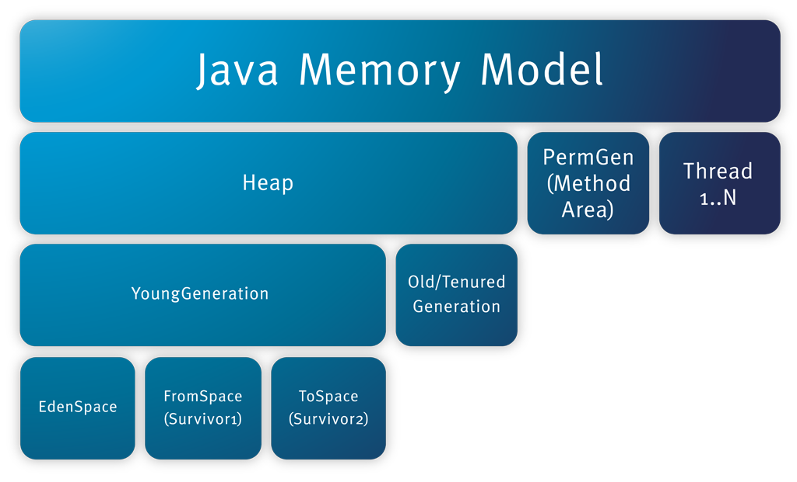
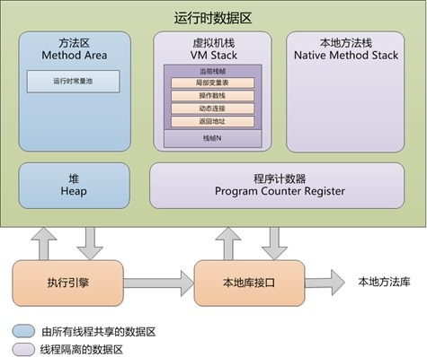
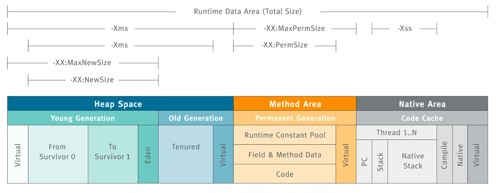

【Java】JMM内存模型和JVM内存结构
JMM内存模型和JVM内存结构
JAVA内存模型(Java Memory Model)
Java内存模型，一般指的是JDK 5 开始使用的新的内存模型，主要由JSR-133: JavaTM Memory Model and Thread Specification 描述。
JMM就是一种符合内存模型规范的，屏蔽了各种硬件和操作系统的访问差异的，保证了Java程序在各种平台下对内存的访问都能保证效果一致的机制及规范。
内存模型可以理解为在特定的操作协议下，对特定的内存或者高速缓存进行读写访问的过程抽象，不同架构下的物理机拥有不一样的内存模型，Java虚拟机也有自己的内存模型，即Java内存模型（Java Memory Model, JMM）。在C/C++语言中直接使用物理硬件和操作系统内存模型，导致不同平台下并发访问出错。而JMM的出现，能够屏蔽掉各种硬件和操作系统的内存访问差异，实现平台一致性，是的Java程序能够“一次编写，到处运行”。
JMM主要解决的问题： 解决由于多线程通过共享内存进行通信时，存在的本地内存数据不一致、编译器会对代码指令重排序、处理器会对代码乱序执行等带来的问题
- 缓存一致性问题其实就是可见性问题。
- 处理器优化是可以导致原子性问题
- 指令重排即会导致有序性问题
内存模型解决并发问题主要采用两种方式：限制处理器优化和使用内存屏障
参考:
JVM内存结构
传送门：JAVA 虚拟机规范
HotSpot 白皮书： Memory Management in the Java HotSpot Virtual Machine 它描述了垃圾回收(GC)触发的内存自动管理
其实 Java 虚拟机的内存结构并不是官方的说法，在《Java 虚拟机规范》中用的是「运行时数据区(Run-Time Data Areas)」这个术语
下图能很清晰的说明JVM内存结构布局：

JVM内存结构主要有三大块：
- 堆内存(Heap)
- 方法区/永久代(Method Area/PermGen) 或者别名Non-Heap(非堆)
- 栈(Thraed…)
在《深入理解Java虚拟机（第二版）》中的描述是下面这个样子的：

按照《JAVA 虚拟机规范》的中所述，可以分为公有和私有两部分
公有部分: 堆[Heap]、方法区[Method Area]、常量池[Constant Pool]
私有部分： PC寄存器、VM虚拟机栈、本地方法栈
各个区域的内存大小
通过一张图了解如何通过参数来控制各个区域的内存大小

参数说明：
没有直接设置老年代的参数，但是可以设置堆空间大小和新生代空间大小两个参数来间接控制。
老年代空间大小=堆空间大小-年轻代大空间大小
JAVA堆(Heap)
Java堆是被所有线程共享的一块内存区域,在虚拟机启动时创建.
这块区域专门用于 Java 实例对象和数组的内存分配，几乎所有实例对象都在会这里进行内存的分配
之所以说几乎是因为有特殊情况，有些时候小对象会直接在栈上进行分配，这种现象我们称之为「栈上分配」
Java堆的内存划分
Java堆是垃圾收集器管理的主要区域，因此很多时候也被称做“GC堆”。
如果从内存回收的角度看，由于现在收集器基本都是采用的分代收集算法，所以Java堆中还可以细分
主要被划分为： 新生代「Young Generation」和老年代「Old Generation」
新生代「Young Generation」又可分为：Eden、From Survivor 0、To Survivor 1
根据《JAVA 虚拟机规范》的规定，Java堆可以处于物理上不连续的内存空间中，只要逻辑上是连续的即可，就像我们的磁盘空间一样。在实现时，既可以实现成固定大小的，也可以是可扩展的，不过当前主流的虚拟机都是按照可扩展来实现的（通过-Xmx和-Xms控制）。
堆可以具有固定大小，或者可以根据计算的需要进行扩展，并且如果不需要更大的堆，则可以收缩。
如果在堆中没有内存完成实例分配，并且堆也无法再扩展时，将会抛出OutOfMemoryError异常。
不同区域的生命周期
- 新建(New)或者短期对象会存放在
Eden区域 - 幸存或者中期的对象会从Eden拷贝到
Survivor区域 - 始终存在的或者长期存在的对象将会从
Survivor拷贝到Old Generation
当有对象需要分配时，一个对象永远优先被分配在年轻代的 Eden 区，等到 Eden 区域内存不够时，Java 虚拟机会启动垃圾回收。此时 Eden 区中没有被引用的对象的内存就会被回收，而一些存活时间较长的对象则会进入到老年代。
在 JVM 中有一个名为 -XX:MaxTenuringThreshold 的参数(默认为7)专门用来设置晋升到老年代所需要经历的 GC 次数，即在年轻代的对象经过了指定次数的 GC 后，将在下次 GC 时进入老年代
为什么 Java 堆要进行这样一个区域划分呢
虚拟机中的对象必然有存活时间长的对象，也有存活时间短的对象，这是一个普遍存在的正态分布规律。如果我们将其混在一起，那么因为存活时间短的对象有很多，那么势必导致较为频繁的垃圾回收。而垃圾回收时不得不对所有内存都进行扫描，但其实有一部分对象，它们存活时间很长，对他们进行扫描完全是浪费时间。因此为了提高垃圾回收效率，分区就理所当然了
虚拟机Heap Space的默认配置为： Eden：from ：to = 8:1:1
其实这是 IBM 公司根据大量统计得出的结果。根据 IBM 公司对对象存活时间的统计，他们发现 80% 的对象存活时间都很短。于是他们将 Eden 区设置为年轻代的 80%，这样可以减少内存空间的浪费，提高内存空间利用率
方法区(Method Area)
方法区（Method Area）与Java堆一样，是各个线程共享的内存区域,在虚拟机启动时创建。
它用于存储已被虚拟机加载的类结构，如：运行时常量池、静态变量、字段、和方法数据，即时编译器编译后的代码等数据，以及方法和构造函数的代码
Java虚拟机规范对这个区域的限制非常宽松，除了和Java堆一样不需要连续的内存和可以选择固定大小或者可扩展外，还可以选择不实现垃圾收集。相对而言，垃圾收集行为在这个区域是比较少出现的，但并非数据进入了方法区就如永久代的名字一样“永久”存在了。这个区域的内存回收目标主要是针对常量池的回收和对类型的卸载，一般来说这个区域的回收“成绩”比较难以令人满意，尤其是类型的卸载，条件相当苛刻，但是这部分区域的回收确实是有必要的。
根据《Java虚拟机规范的规定》，当方法区无法满足内存分配需求时，将抛出OutOfMemoryError异常。
方法区在不同版本的虚拟机有不同的表现形式
例如在 1.7 版本的 HotSpot 虚拟机中，方法区被称为永久代（Permanent Space），而在 JDK 1.8 中则被称之为 MetaSpace
拓展点
可以看到常量池其实是存放在方法区中的，但《Java 虚拟机规范》将常量池和方法区放在同一个等级上
虽然《Java虚拟机规范》把方法区描述为堆的一个逻辑部分，但是它却有一个别名叫做Non-Heap（非堆），目的应该是与Java堆区分开来。
对于习惯在HotSpot虚拟机上开发和部署程序的开发者来说，很多人愿意把方法区称为“永久代”（Permanent Generation），本质上两者并不等价，仅仅是因为HotSpot虚拟机的设计团队选择把GC分代收集扩展至方法区，或者说使用永久代来实现方法区而已。
程序计数器(Program Counter Register)
每个Java虚拟机线程都有自己私有独立的 pc（程序计数器）寄存器。
它的作用可以看做是当前线程所执行的字节码的行号指示器。
在任何时候，每个Java虚拟机线程都在执行单个方法的代码，即该线程的当前方法。如果不是该方法 native，则pc寄存器包含当前正在执行的Java虚拟机指令的地址。如果线程当前正在执行native方法，则Java虚拟机pc 寄存器的值为undefined。
此内存区域是唯一一个在Java虚拟机规范中没有规定任何OutOfMemoryError情况的区域
JVM栈(Java Virtual Machine Stacks)
与程序计数器一样，Java虚拟机栈（Java Virtual Machine Stack）也是线程私有的，它的生命周期与线程相同，与线程同时创建。
JVM Stack存储帧(Stack Frame) [A Java Virtual Machine stack stores frames]
JVM Stack类似于传统语言的Stack，例如C语言：它保存局部变量和部分结果，并在方法调用和返回中起作用。由于除了推送和弹出帧(Frames)之外，永远不会直接操作Java虚拟机堆栈（Java Virtual Machine Stack），因此帧(Frames)可以是堆(heap)分配的。Java虚拟机堆栈的内存不需要是连续的。
虚拟机栈(JVM Stacks)描述的是Java方法执行的内存模型：每个方法被执行的时候都会同时创建一个栈帧（Stack Frame）用于存储局部变量表、操作数栈、动态链接、方法出口以及一些过程结果等信息。每一个方法被调用直至执行完成的过程，就对应着一个栈帧在虚拟机栈中从入栈到出栈的过程。
局部变量表存放了编译期可知的各种基本数据类型（boolean、byte、char、short、int、float、long、double）、对象引用（reference类型，它不等同于对象本身，根据不同的虚拟机实现，它可能是一个指向对象起始地址的引用指针，也可能指向一个代表对象的句柄或者其他与此对象相关的位置）和returnAddress类型（指向了一条字节码指令的地址）。
其中64位长度的long和double类型的数据会占用2个局部变量空间（Slot），其余的数据类型只占用1个。局部变量表所需的内存空间在编译期间完成分配，当进入一个方法时，这个方法需要在帧中分配多大的局部变量空间是完全确定的，在方法运行期间不会改变局部变量表的大小。
在Java虚拟机规范中，对这个区域规定了两种异常状况：如果线程请求的栈深度大于虚拟机所允许的深度，将抛出StackOverflowError异常；如果虚拟机栈可以动态扩展（当前大部分的Java虚拟机都可动态扩展，只不过Java虚拟机规范中也允许固定长度的虚拟机栈），当扩展时无法申请到足够的内存时会抛出OutOfMemoryError异常。
本地方法栈（Native Method Stacks）
本地方法栈（Native Method Stacks）与虚拟机栈所发挥的作用是非常相似的，其区别不过是虚拟机栈为虚拟机执行Java方法（也就是字节码）服务，而本地方法栈则是为虚拟机使用到的Native方法服务。虚拟机规范中对本地方法栈中的方法使用的语言、使用方式与数据结构并没有强制规定，因此具体的虚拟机可以自由实现它。甚至有的虚拟机（譬如Sun HotSpot虚拟机）直接就把本地方法栈和虚拟机栈合二为一。与虚拟机栈一样，本地方法栈区域也会抛出StackOverflowError和OutOfMemoryError异常。